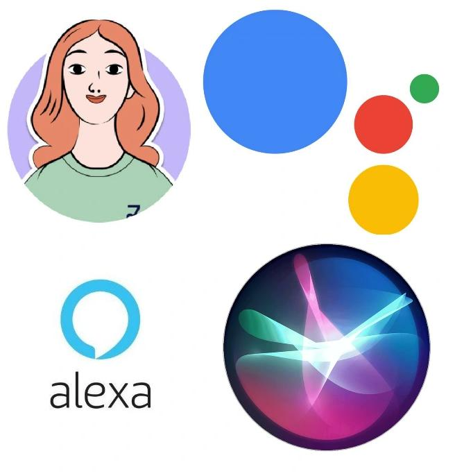
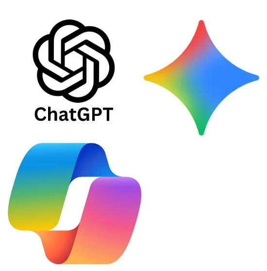
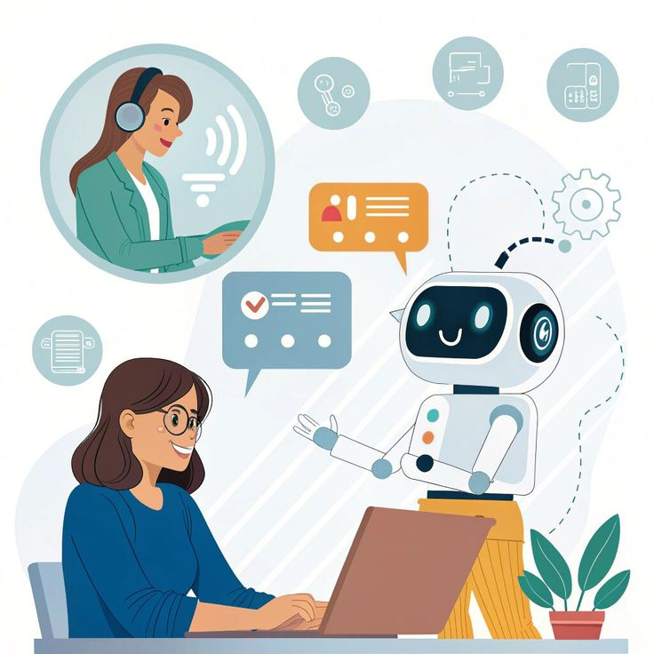

Introducción
Los asistentes virtuales y la inteligencia artificial generativa son tecnologías cada vez más presentes en la vida cotidiana. Se utilizan en celulares, computadoras, hogares, escuelas y empresas. Aunque están relacionadas, no son exactamente lo mismo: los asistentes virtuales ayudan a realizar tareas, mientras que la inteligencia artificial generativa crea contenido nuevo.
¿Qué es?
Asistente virtual:
Es una tecnología capaz de crear contenido nuevo a partir de instrucciones dadas por una persona. Puede producir textos, imágenes, videos, música, presentaciones y programas informáticos. Para funcionar, utiliza modelos entrenados con grandes cantidades de información. Cuando recibe una pregunta o una orden, analiza las palabras y genera una respuesta basándose en los patrones que aprendió. Por ejemplo, si una persona escribe “creá una imagen de un robot en una escuela”, la herramienta puede producir una imagen siguiendo esa descripción. La inteligencia artificial generativa se usa en la educación para explicar temas y crear actividades; en el trabajo, para redactar documentos; en el diseño, para crear imágenes; y en la programación, para escribir o corregir código. Sin embargo, puede equivocarse, inventar datos o crear contenido que parezca real aunque sea falso. Por eso es importante revisar la información y no compartir datos personales o confidenciales.
Asistentes virtuales
Inteligencia artificial generativa:
Son programas diseñados para ayudar a las personas a realizar distintas tareas. Pueden comunicarse mediante texto o voz y responder preguntas, dar explicaciones, crear recordatorios, traducir, resumir información y ayudar a organizar actividades. Algunos asistentes conocidos son *Siri, Alexa, Google Assistant, Copilot y Luzia*. También existen asistentes especializados para empresas, atención al cliente, educación y salud. Estos asistentes funcionan analizando lo que escribe o dice el usuario. Primero identifican la intención del mensaje y luego generan una respuesta o realizan una acción. Por ejemplo, si alguien dice “poné una alarma para las siete”, el asistente interpreta la orden y configura la alarma.
IA generativa
¿Cómo funciona?
Primero, el usuario realiza una pregunta o da una orden. El sistema analiza las palabras y trata de comprender la intención del mensaje. Después, compara la solicitud con los patrones aprendidos durante su entrenamiento y genera una respuesta. En los asistentes de voz, la tecnología convierte la voz en texto para poder analizarla. Luego, transforma la respuesta escrita nuevamente en voz. Aunque parecen conversar como una persona, estos sistemas no tienen conciencia ni emociones.
Caracteristicas
Estas tecnologías pueden comprender preguntas, analizar información y responder en poco tiempo. También pueden mantener conversaciones y adaptarse a diferentes necesidades. La inteligencia artificial generativa se destaca porque produce contenido nuevo y puede trabajar con distintos formatos, como texto, imágenes, audio y video. Sin embargo, sus respuestas no siempre son correctas. Además, no piensan ni sienten como los seres humanos, sino que utilizan patrones aprendidos a partir de grandes cantidades de datos.
Curiosidadses
Algunos asistentes virtuales pueden reconocer distintos acentos y formas de hablar. La inteligencia artificial generativa también puede crear imágenes de personas, lugares o situaciones que nunca existieron. Una misma instrucción puede producir resultados diferentes cada vez. Además, cuanto más clara y detallada sea la orden, generalmente mejor será la respuesta. A pesar de su apariencia humana, estas tecnologías no tienen sentimientos ni pensamientos propios.
| Ventajas | Desventajas | Ahorran tiempo al realizar tareas rapidamente. | Pueden brindar informacion incorrecta. |
|---|---|
| Permiten crear textos, imagenes, videos y musica. | Algunas respuesats pueden contener parjuicios. |
| Automatizan tareas repetitivas. | Su uso excesivo puede reducir el pensamiento critico. |
| Facilitan la atencion al cliente. | Si se usa mal representa muchos riesgos. |
Concluciones
Los asistentes virtuales y la inteligencia artificial generativa son herramientas útiles que facilitan muchas actividades. Los primeros se enfocan principalmente en ayudar a realizar tareas, mientras que la segunda crea contenido nuevo a partir de instrucciones. Para aprovechar sus beneficios, es importante utilizarlas de manera responsable, revisar la información obtenida y proteger los datos personales. La inteligencia artificial puede ser una gran ayuda, pero no debe reemplazar el pensamiento crítico ni las decisiones humanas.
volver al inicio
inicio